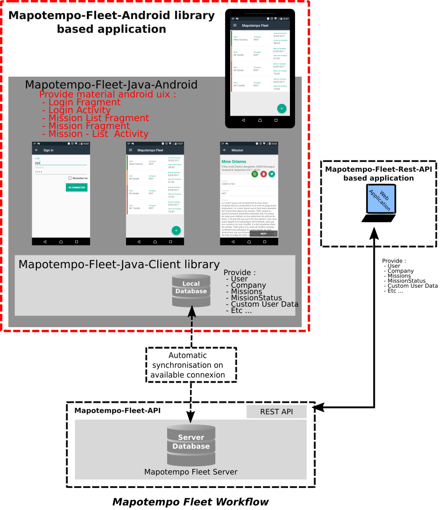
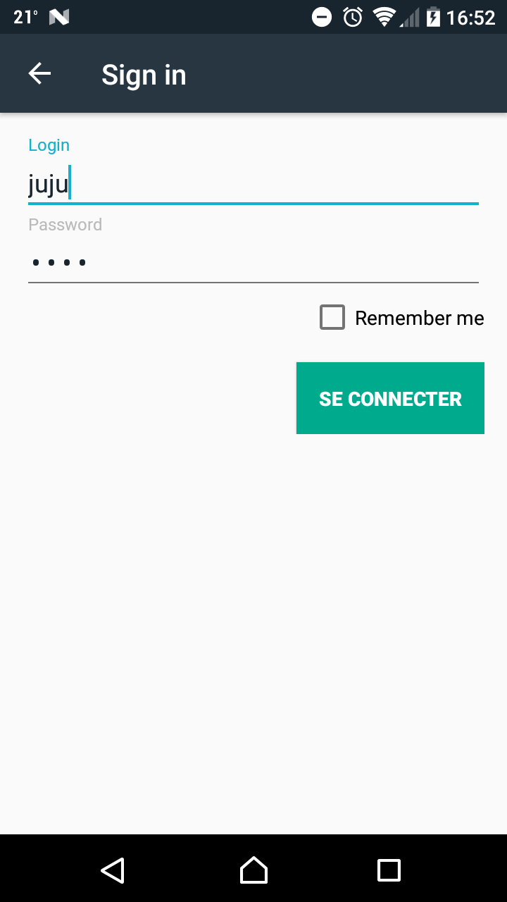
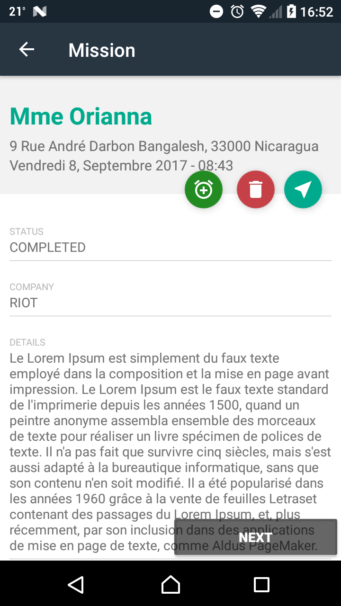

Fleet-Android provides android's UIX components in order to manage Mapotempo's fleet models. This library/application is base on the Mapotempo-Fleet-Java-Client.
The {@link mapotempo.com.mapotempo_fleet_android.MapotempoApplication} is required in the application to provide and manage the {@link com.mapotempo.fleet.core.MapotempoFleetManager}.
Contain a {@link mapotempo.com.mapotempo_fleet_android.LoginFragment}.
Display and manage a login view.
The {@link mapotempo.com.mapotempo_fleet_android.MainActivity} use one or two fragments according to the device orientation.
The {@link mapotempo.com.mapotempo_fleet_android.MissionActivity} activity contain one {@link mapotempo.com.mapotempo_fleet_android.mission.MissionsPagerFragment}.
This fragment display all user missions.
This fragment display mission details and provide update on them.